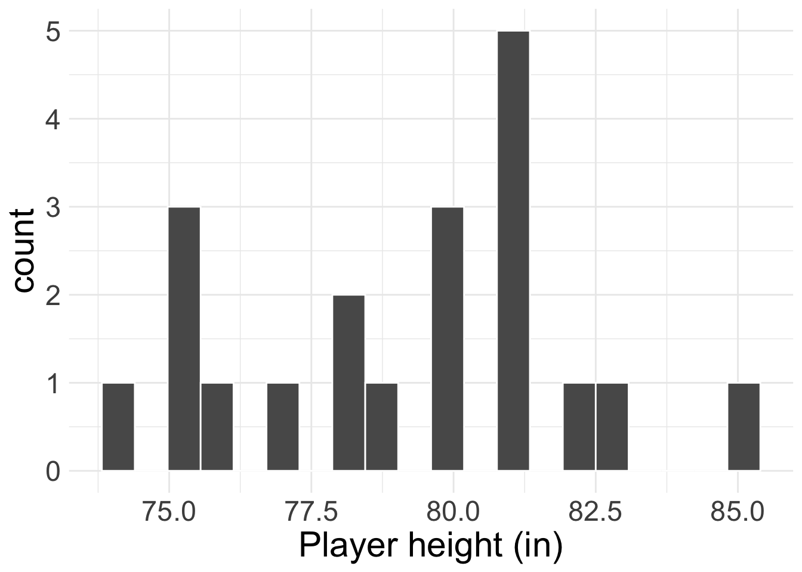
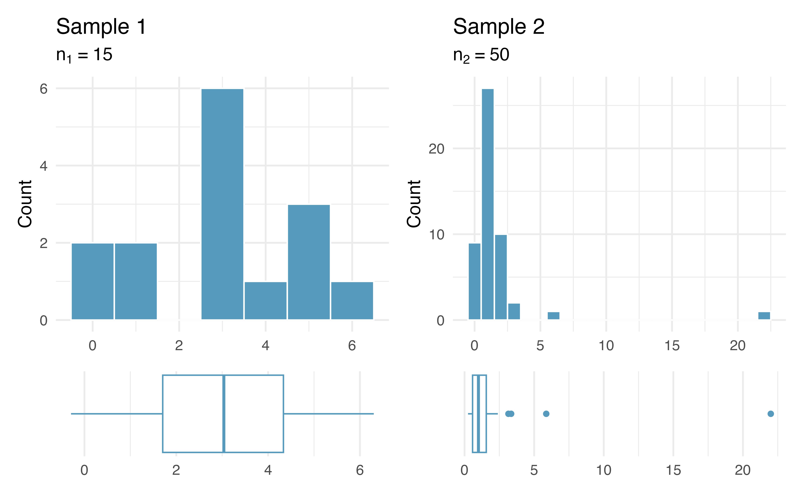
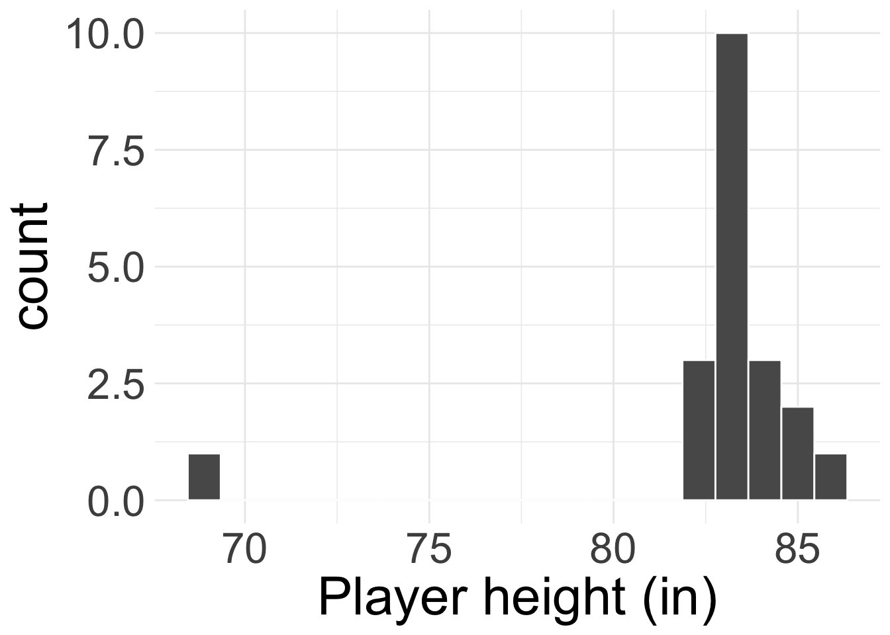
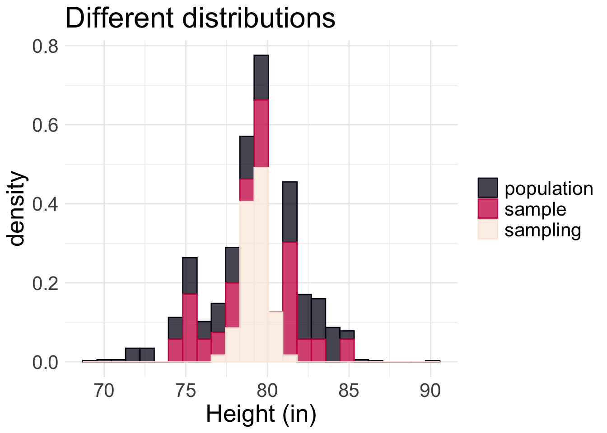
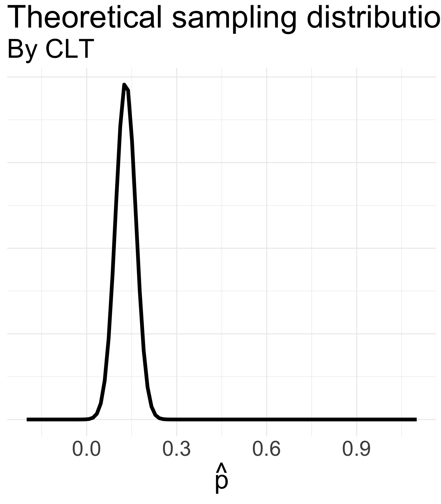
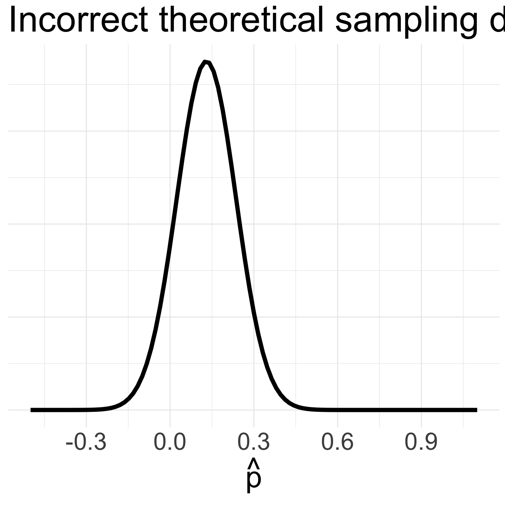
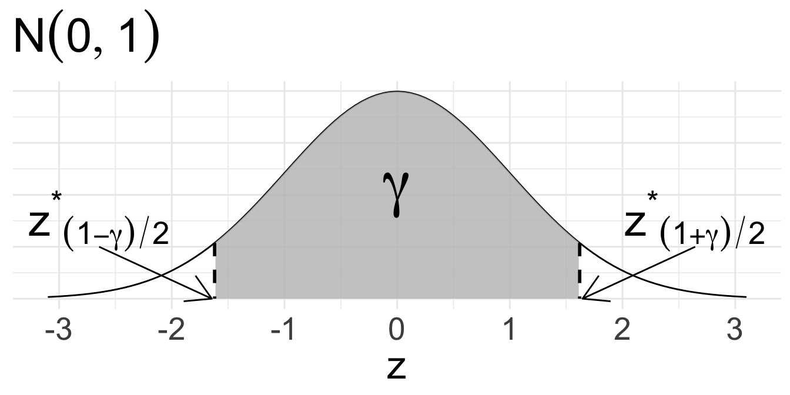

Central Limit Theorem
Housekeeping
Final project groups!
No office hours this Friday, but make-up hours Thursday 2:30-3:30pm
Recap
Normal distribution: symmetric, bell-shaped curve that is described by mean \(\mu\) and standard deviation \(\sigma\)
- Common model used to describe behavior of continuous variables
Use area under the Normal curve to obtain probabilities
68-95-99.7 rule
z-score standardizes observations to allow for easier comparison: \(z = \frac{x- \mu}{\sigma}\)
- If the data are known to be Normal, then the z-scores are \(N(0,1)\)
Where we’re going
We are going to learn one of the BIGGEST theorems in Statistics
Uses the Normal distribution, and will be immensely helpful for inference tasks of confidence intervals and hypothesis testing
Central Limit Theorem
Central Limit Theorem (CLT)
Assume that you have a sufficiently large sample of \(n\) independent values \(x_{1},\ldots, x_{n}\) from a population with mean \(\mu\) and standard deviation \(\sigma\).
Then the distribution of sample means is approximately Normal:
\[ \bar{X} \overset{\cdot}{\sim} N\left(\mu, \frac{\sigma}{\sqrt{n}}\right) \]
- That is, the sampling distribution of the sample mean is approximately normal with mean \(\mu\) and standard error \(\sigma/\sqrt{n}\)
CLT assumptions
Independent samples:
- Usually achieved by random sampling
Normality condition:
- If the data \(x_{1},\ldots, x_{n}\) are known to be Normal and independent, then the distribution of \(\bar{X}\) is exactly Normal
- If data are not known to be Normal, then check:
If \(n\) is small \((n < 30)\): if there are no clear outliers, we assume data are approximately normal
If \(n\) is larger \((30 \leq n < ?)\): if there are no particularly extreme outliers, we assume data are approximately normal
If any of these aren’t met, then we cannot use CLT
Normality condition
Do you believe the normality condition is satisfied in the following two samples?

Sample 1: small \(n < 30\). But histogram and boxplot reveals no clear outliers, so I would say normality condition is met.
Sample 2: larger \(n \geq 30\). Even though \(n\) is larger, there is a particularly extreme outlier, so I would say normality condition is not met.
CLT again
Let’s see it again: If the assumptions of independence and Normality condition apply, then
\[\bar{X} \overset{\cdot}{\sim} N\left(\mu, \frac{\sigma}{\sqrt{n}} \right)\] where \(\mu\) and \(\sigma\) are the population mean and standard deviation, and \(\bar{X}\) is the sample mean obtained from a sample of size \(n\).
- What does the \(\frac{\sigma}{\sqrt{n}}\) represent?
- For fixed \(\sigma\), how does the sampling distribution change as \(n\) increases?
Height example
The average height of all NBA players in the 2008-9 season is 79.21 inches, with a population standard deviation of 3.57 inches. We randomly sampled 20 of these players and recorded their heights, as shown below.
What is the sampling distribution of the sample mean heights? Do we know it exactly?
Height example: solution
We don’t know if the data are Normal. But:
- Independence? Yes: we have independent samples!
- Normality condition? Yes: even though we have small sample size, the histogram of the data looks approximately Normal (no clear outliers).
- So CLT applies! By CLT: \(\bar{X} \overset{\cdot}{\sim} N\left(79.21, \frac{3.57}{\sqrt{20}}\right)\)
- If data instead looked like the following, I would say normality condition is violated:

The three different dists.
Note: \(y\)-axis is density (how likely each \(x\) value is from the given distribution).

What do you notice about how the three distributions compare? Are some distributions very similar? Are some very different? Why do you think this is?
Bank example
Customers are standing in line at a bank.
Let \(X_{i}\) represent the service time for customer \(i\).
Suppose that the average service time for all customers is 5 minutes, with a standard deviation of 6 minutes.
- Assume that a bank currently has 36 customers in it, and all customers are independent of each other. What is the probability that the average service time of all these customers is less than 4 minutes?
Bank example: solution
We want \(\text{Pr}(\bar{X} < 4)\)
Conditions for CLT met: independence (random sample) and sufficiently large sample size \((n=36)\).
- So by CLT, \(\bar{X} \overset{\cdot}{\sim}N(5, \frac{6}{\sqrt{36}}) = N(5, 1)\)
Using 68-95-99.7 rule, probability that the average service time of all these customers is less than 4 minutes is about \(1 - (0.34 + 0.5) = 0.16\)
pnorm(4, 5, 1)= 0.159
CLT for proportions
Remember: a proportion can be viewed as a mean! So the CLT will apply to proportions as well!
CLT for sample proportions
Suppose we have some true population proportion \(p\). If we take a sample of size \(n\) from the population, then the CLT tells us that sampling distribution of \(\hat{p}\) is approximately Normal if we have:
Independence
“Success-failure” condition: \(np \geq 10\) and \(n(1-p) \geq 10\)
If these two conditions hold, then by CLT:
\[ \hat{p} \overset{\cdot}{\sim} N\left(p, \sqrt{\frac{p(1-p)}{n}}\right) \]
- Why is the condition called “success-failure”?
- Are you comfortable with using a Normal distribution to approximate the sampling distribution of \(\hat{p}\)?
M&M’s example
Mars, Inc. is the company that makes M&M’s. In 2008, Mars changed their color distribution to have 13% red candies.
Let \(\hat{p}\) represent the proportion of red M&M’s in a random sample of \(n\) M&M’s. What is the sampling distribution of \(\hat{p}\) if we take a random sample of sizes:
\(n = 100\), vs.
\(n = 10\)
M&M’s example: solution
- Independence? Yes, due to the random sample.
- Success-failure? Depends…
If \(n= 100\):
\(np = 100(0.13) = 13 \geq 10\)
\(n(1-p) = 100(0.87) = 87 \geq 10\)
So CLT applies!
\[ \begin{align*} \hat{p} &\overset{\cdot}{\sim} N\left(0.13, \sqrt{\frac{0.13(1-0.13)}{100}}\right) \\ &= N(0.13, 0.034 ) \end{align*} \]

M&M’s example: solution (cont.)
- If \(n = 10\):
- \(np = 10(0.13) = 1.3 < 10\)
- Success-failure condition not met. Cannot use CLT.
If we incorrectly applied CLT, we might think \[\begin{align*} \hat{p} &\overset{\cdot}{\sim} N\left(0.13, \sqrt{\frac{0.13(1-0.13)}{10}}\right) \\ &= N(0.13, 0.106 ) \end{align*}\]
What does this distribution look like?
Why is this scary??

Why is CLT so important?
Allows statisticians safely assume that the mean’s sampling distribution is approximately Normal. The Normal distribution has nice properties and is easy to work with.
Can be applied to both continuous and discrete numeric data!
Does not depend on the underlying distribution of the data.
For many of these reasons, we can use the CLT for inference!
NOTE: we might not know what \(\mu\) or \(p\) actually are, but CLT tells us that the sampling distributions of \(\bar{X}\) and \(\hat{p}\) are centered at their theoretical values!
Confidence Intervals via CLT
Mathematical CIs
The CLT gives us the sampling distribution of a sample mean “for free” (assuming conditions are met)
Formula for a (symmetric) \(\gamma \times 100\%\) confidence interval:
\[ \text{point estimate} \pm \underbrace{\text{critical value} \times \text{SE}}_{\text{Margin of Error}} \]
point estimate: the “best guess” statistic from our observed data (e.g. \(\hat{p}_{obs}\) and \(\bar{x}_{obs}\))
SE: standard error of the statistic
critical value: percentile that guarantees the \(\gamma\times 100\). This will vary depending on your data/assumptions
Towards a CI for a single proportion
Suppose that I have a sample of \(n\) binary values. Using the sample, I want a \(\gamma \times 100\%\) confidence interval for the probability of success \(p\).
If assumptions of CLT for sample proportions hold, then we know
\[ \hat{p} \overset{\cdot}{\sim} N\left(p, \sqrt{\frac{p(1-p)}{n}}\right) \]
How do we know if success-failure condition holds without knowing \(p\)?
Let’s use our best guess: \(\hat{p}_{obs}\)
Success-failure condition for confidence intervals: \(n\hat{p}_{obs}\) and \(n(1-\hat{p}_{obs})\) both \(\geq 10\)
Towards a CI for a single proportion (cont.)
We can use/manipulate the CLT result to obtain a confidence interval for \(p\)!
Point estimate: \(\hat{p}_{obs}\)
Standard error: \(SE = \sqrt{\frac{p(1-p)}{n}}\)
But we still don’t have \(p\)!
Instead, use the following approximation for CI:
\[\widehat{\text{SE}} \approx \sqrt{\frac{\hat{p}_{obs}(1-\hat{p}_{obs})}{n}}\]
Towards a CI for a single proportion (cont.)
Critical value: to obtain the middle \(\gamma \times 100\%\), use the \(\frac{1-\gamma}{2}\) and \(\frac{1+\gamma}{2}\) percentiles of the \(N(0,1)\) distribution
\(z_{(1-\gamma)/2}^{*}\) (lower bound) and \(z_{(1+\gamma)/2}^{*}\) (upper bound)
Note: \(z_{(1+\gamma)/2}^{*} = - z_{(1-\gamma)/2}^{*}\)

CI for single proportion
So the formula for a (symmetric) \(\gamma\times 100\%\) CI for \(p\) is:
\[ \hat{p}_{obs} \pm z_{(1+\gamma)/2}^{*}\times \sqrt{\frac{\hat{p}_{obs}(1-\hat{p}_{obs})}{n}} \]where the critical value \(z^{*}_{(1+\gamma)/2}\) is obtained from \(N(0,1)\) distribution.
NOTE: we could have obtained the CI directly from the sampling distribution of \(\hat{p}\). However, the critical value of \(z_{(1+\gamma)/2}^{*}\sim N(0,1)\) is very general. Does not depend on the specific data you have!
Example
A poll of 100 randomly sampled registered voters in a town was conducted, asking voters if they support legalized marijuana. It was found that 60% of respondents were in support.
What is the population parameter? What is the point estimate/statistic?
Find a (symmetric) 90% confidence interval for the true proportion of town residents in favor of legalized marijuana.
Conditions met?
Independence: random sample
Success-failure condition: \(n\hat{p}_{obs} =100(0.6) = 60 \geq 10\) and \(n(1-\hat{p}_{obs}) = 100(0.4) = 40 \geq 10\)
- Because conditions for CLT are met, we can proceed.
Example (cont.)
Find 90% CI for proportion of town residents in favor of legalized marijuana.
Gathering components for CI:
Point estimate: \(\hat{p}_{obs}\) = 0.6
Standard error: \(\widehat{SE} = \sqrt{\frac{0.6(0.4)}{100}} \approx 0.049\)
Critical value: what percentiles do we want?
- \(z_{0.95}^{*} =\)
qnorm(0.95, mean = 0, sd = 1)\(\approx 1.645\)
- \(z_{0.95}^{*} =\)
So our 90% confidence interval for \(p\) is:
\[ \hat{p}_{obs} \pm z^{*}_{0.95} \widehat{SE} = 0.6 \pm 1.645(0.049) = (0.519, 0.681) \]
Interpret the confidence interval in context!
Comprehension questions
What is the main takeaway of the CLT?
What are the assumptions of the CLT?
What is the Normal approximation for CLT?
How do we construct a \(\gamma \times 100\%\) confidence interval using a mathematical model?